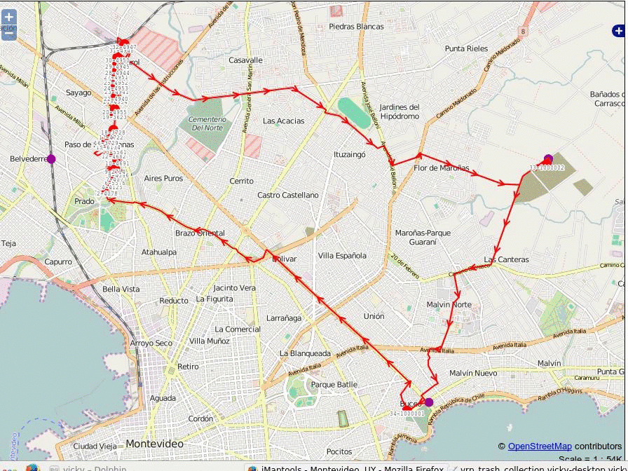

Garbage Collection
... and more with FOSS4G
Presented by Vicky Vergara
This Old Earth
"This old earth
Needs our help
To stay fresh and clean and green
With a pick it up; pitch it in; and throw it in the can--
This old earth needs a helping hand!"
Links To prensentation
garbageCollection.pdf
Animations on next slides.
insertBestPairInCleanTrip

The Complete Route
Celia Virginia Vergara Castillo
- Economist, Computer Scientist
- Work in Georepublic
- pgRouting developer
- Living in Mexico
- Known as Vicky
Please, enjoy FOSS4G Bonn!!!